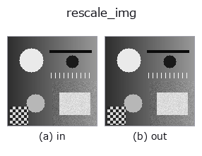

geometry op• データ種: image → image
• 呼び出し: fullseye.apply(img, "rescale_img", a=0.5, b=0.5) (2-D は 1 画像 + 2 スカラつまみ a,b∈[0,1] のモデル)
• HALCON 相当: zoom_image_factor(意味・パラメータは HALCON リファレンスが参考になる)

*図は合成の入力 128×128 で実際に走らせた出力。左が入力、右が出力。点群は上から見た散布(明るさ = z)、1-D 列は折れ線、体積は z 方向の最大値投影、動画は中央フレーム、複素画像は振幅、絵にならない返り値は値そのもの。*
つまみ a を振る(0.1 / 0.5 / 0.9、もう一方は既定):
▸ rescale_img: knob a sweep (docs site)
つまみ b を振る(0.1 / 0.5 / 0.9、もう一方は既定):
▸ rescale_img: knob b sweep (docs site)
別の画像でも(合成シーン / 写真 / 硬貨。上段が入力、下段がその出力。つまみは既定):
▸ rescale_img: other inputs (docs site)
*4 列目はカラー (H,W,3) の入力。この op は色を跨がずに扱える(色チャネルを 3 本目の空間軸として畳み込まない)。*
中心を保った等方スケーリング `s = 0.7 + 0.6·a`。キャンバスは変えない。
`b = **補間の次数** — (0, 1, 3, 3)[min(3, int(4b))]`(0 = 最近傍、
1 = 双一次、3 = 三次スプライン)。`b=0.5 は 3 次で、b` が死んでいた頃の
既定(`ndimage` の order=3)と ビット一致する。
★2026-09-02: それまで `rescale_img / zoom_image_factor` /
`zoom_image_size` は 3 つとも同じ実装(実測: 相互の最大差 0.0 と
4.9e-14)で、3 つとも `b` を使っていなかった。3 つの役割を分けた:
• `rescale_img` — 等方倍率 1 つ + 補間次数(この関数)
• `zoom_image_factor`— 縦横 2 つの倍率(HALCON の ScaleHeight/ScaleWidth)
• `zoom_image_size` — 目標サイズ指定(出力 shape が変わる)
HALCON 名も実態に合わせて `zoom_image_size → zoom_image_factor` へ
付け替えた(この op はサイズではなく倍率で駆動するため)。
• サンプルデータ カタログ(DL URL / ライセンス) — 2-D は skimage.data(BSD/public)+ 合成、3-D は実データ源(Stanford/PDS 等)の DL URL。
• 演算子の来歴・参考文献 — この op 族の元になった研究/手法の出典。
• アルゴリズムの正典(著者・年)と用途は上記ファミリ使い方ガイドに記載。
下のプログラムは実際に走ることを確かめてある(図と同じ入力)。Studio のヘルプではこのブロックがボタンになり、その場で読み込んで実行できる。
rescale_img 0.50 0.50
▸ Load this pipeline · Load & run
• gallery2d_geometry — py -3.11 examples/gallery2d_geometry.py
image を入力に取れる)identity · gaussian · mean_box · bilateral · unsharp · median · min_filter · max_filter
geometry)rotate_img · affine_warp · sk_swirl · mirror_image · transpose_region · rotate_image · zoom_image_factor · zoom_image_size
*Provenance: ops.py — 2D operator registry. この per-op ノートは tools/opdocs.py md が自動生成(手編集しない)。*
© 2026 Kazufumi Furuse — Fullseye operator documentation. Licensed under Apache-2.0.
{kind=link}
{kind=link}
{kind=link}